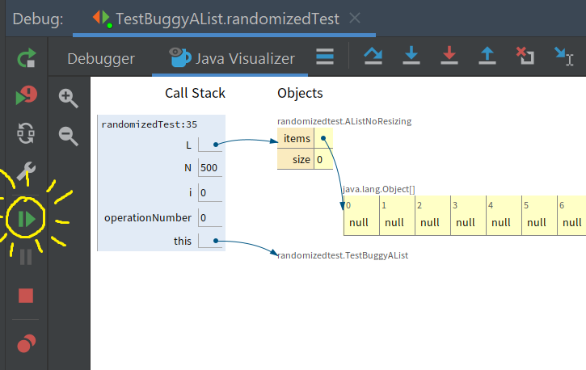
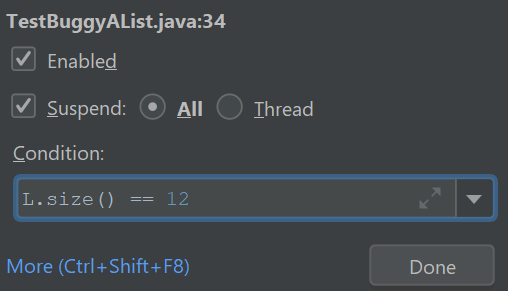
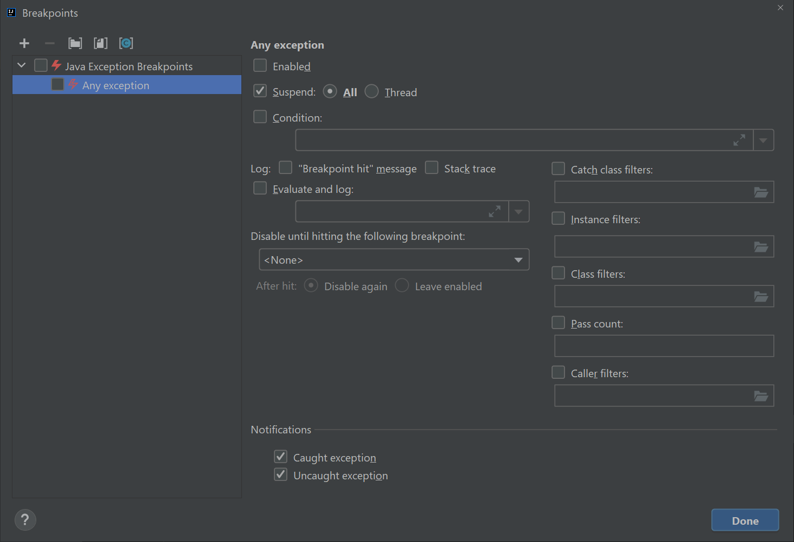
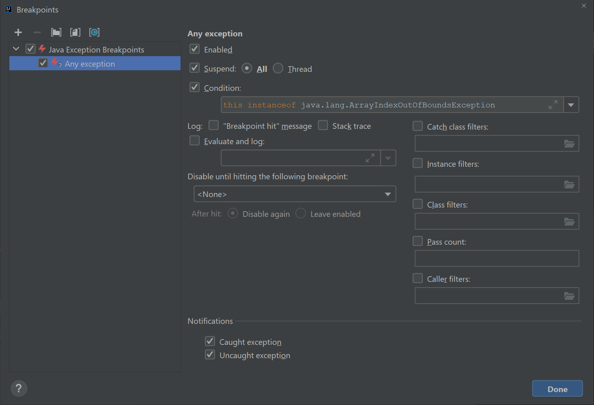

Introduction
In this lab, you’ll create a timing test for the SLList and AList classes. You’ll also create a randomized comparison test for a buggy implementation of the AList class.
Along the way, we will also explore three new debugger features: conditional breakpoints, the resume button, and execution breakpoints.
Timing Tests for List61B
For this part of the lab, make sure you’re opening the code in the timingtest package, not the code in the randomizedtest package.
Timing the construction of an AList with a bad resize strategy
As discussed in lecture, a multiplicative resizing strategy will result in fast add operations / good performance, whereas an additive resizing strategy will result in slow add operations / bad performance. In this part of the lab, we’ll show how we can demonstrate this empirically.
In the timingtest package, we’ve provided the AList class created in lecture with the bad resizing strategy below:
public void addLast(Item x) {
if (size == items.length) {
resize(size + 1);
}
items[size] = x;
size = size + 1;
}
Your goal for this part of the lab is to write code that tabulates the amount of time needed to create a AList of various sizes using the addLast method above. The output of this timing test will look something like this:
Timing table for addLast
N time (s) # ops microsec/op
------------------------------------------------------------
1000 0.00 1000 0.20
2000 0.01 2000 0.20
4000 0.01 4000 1.20
8000 0.04 8000 4.30
16000 0.10 16000 10.00
32000 0.50 32000 49.70
64000 1.15 64000 114.80
128000 3.74 128000 374.30
The first column N gives the size of the data structure (how many elements it contains). The second column time (s) gives the time required to complete all operations. The third column # ops gives the number of calls to addLast made during the timing experiment. And finally the fourth column microsec/op gives the number of microseconds it took on average to complete each call to addLast. Note that for this experiment, N and # ops is redundant, since the result of making 128,000 calls to addLast will result in an N of 128,000.
The important thing to notice here is that addLast is not “constant time”. That is, the time it takes each addLast call to complete varies significantly with the size of the list: 374.30 microseconds when the list is long, and only 0.20 microseconds when the list is short. This is essentially how our autograder tests work for the LinkedListDeque and ArrayDeque classes from project 1, i.e. we make sure that the time was constant for operations that should have been constant.
You might notice that the time per addLast operation is the same for N = 1000 and N = 2000. This is common for timing tests. For small inputs, results are unreliable for two reasons: The variance in runtime is high (due to issues like caching, process switching, branch prediction, etc. which you’ll learn about if you take 61C), and the accuracy of our timer (milliseconds) is insufficient to resolve the difference between N = 1000 and N = 2000. This can even lead to the runtime for N = 1000 being greater than that of N = 2000. For this reason, when we run empirical timing tests, we want to focus on the behavior for large N, e.g. N = 32000 vs N = 64000.
Another thing you may notice is that the times you get from this table for your machine may be much different than what is written above. That’s okay, as long as the general trend is the same. In 61C, you will see exactly why the same code may take vastly different amounts of time on different hardware. In 61B (and in most theory-based classes) we are only concerned with general trends, which mask non-idealities like the type of processor you are using. While reasoning about “general trends” may seem tricky, we will learn a formalism for this later in the course (asymptotics). For now, use your intuition!
Now that you understand the table above, add a function public void timeAListConstruction to the class TimeAList that generates the table above for an AList. Note: If your computer is a little slow, you might want to stop at 64,000 instead of 128,000. Make sure to add a function call to timeAListConstruction to the main method of TimeAList class.
For your convenience, we’ve provided a method called printTimingTable(AList<Integer> Ns, AList<Double> times, AList<Integer> opCounts) that will print the table above, where Ns is the first column, times is the second column, and opCounts is the third column. The fourth column (microsec/op) is automatically computed for you. Your times should be in seconds. You should use the Stopwatch class. See stopwatchDemo for an example. Interestingly, note that we are using the same data structure that we are timing (an AList) to store the timing data! The way we accomplish this is by using many different instances of the data structure; the one that is being timed is not the same as the ones that are storing the timing data.
Timing the construction of an AList with a good resize strategy
Now modify the AList class so that the resize strategy is multiplicative instead of additive and rerun timeAListConstruction. Your AList objects should now be constructed nearly instantly, even for N = 128,000, and each add operation should only take a fraction of a microsecond.
Optional: Try increasing the maximum N to larger values, e.g. 10 million. You should see that the time per add operation remains constant.
Optional: Try experimenting with different resizing factors and see how the runtimes change. For example, if you resize by a factor of 1.01, you should still get constant time addLast operations! Note that to use a non-integer factor you’ll need to convert to the nearest integer. For example you can use Math.round().
public void addLast(Item x) {
if (size == items.length) {
resize((int) (size * 1.01));
}
items[size] = x;
size = size + 1;
}
Timing the getLast method of SLList
Above, we showed how we can time the construction of a data structure. However, sometimes we’re interested in the dependence of the runtime of a method on the size of an existing data structure that has already been constructed.
For example, in your LinkedListDeque, you are supposed to have addLast operations that are fast… a single addLast operation must take “constant time”, i.e. execution time should not depend on the size of the deque.
In this part of the lab, we’ll show you how to empirically test whether a method’s runtime depends on the size of the data structure.
Suppose we want to compute the time per operation for getLast for an SLList and want to know how this runtime depends on N. To do this, we need to follow the procedure below:
- Create an
SLList. - Add N items to the
SLList. - Start the timer.
- Perform M getLast operations on the
SLList. - Check the timer. This gives the total time to complete all M operations.
It’s important that we do not start the timer until after step 2 has been completed. Otherwise the timing test includes the runtime to build the data structure, whereas we’re only interested how the runtime for getLast depends on the size of the SLList.
In the TimeSLList class, edit the function timeGetLast to perform the procedure above, and generate a table similar to the one shown below:
Timing table for getLast
N time (s) # ops microsec/op
------------------------------------------------------------
1000 0.02 10000 1.70
2000 0.03 10000 3.10
4000 0.06 10000 6.20
8000 0.13 10000 12.50
16000 0.25 10000 25.00
32000 0.53 10000 52.80
64000 1.35 10000 135.30
128000 2.57 10000 257.30
Note that the N and # ops columns are no longer the same. This is because we are always calling getLast the same number of times regardless of the size of the list, i.e. M = 10000 for step 4 of the procedure described above.
Note that the operations are again not constant time! (If your results imply that the operations are constant time, make sure you’re running your tests on the SLList instead of the AList!). This means that as the list gets bigger, the getLast operation becomes slower. This would be a serious problem in a real world application. For example, suppose the list is of ATM transactions, and the getLast operation was being called in order to get the most recent transaction to print a receipt. Every time the ATM is used, the next receipt would take a little bit longer to print. Eventually over many months or years, the list would become so large that the getLast operation would be unusably slow. While this is a contrived example, similar problems have plagued real world systems!
For this reason, the LinkedListDeque that you build in project 1 will be required to have a runtime that is independent of the size of the data structure. In other words, the last column will be some approximately constant value.
Optional question to ponder: Why is getLast so slow? What is special about your LinkedListDeque that makes the getLast function faster?
Randomized Comparison Tests
For this part of the lab, make sure you’re using the code in the randomizedtest package, not the timingtest package.
Simple Comparison Test
One technique for testing code is to do a “comparison test”. In such a test, we have two implementations of the same class. One implementation is known (or strongly believed) to be correct, and the other is under development and not yet verified.
For example, we’ve provided the AListNoResizing class. This class does not support any resizing operations and simply has a hard-coded array size of 1000. This means that it isn’t practically useful since it can never hold more than 1000 items. However, because it is extremely simple, we have high confidence that it works.
By contrast, we’ve also provided the BuggyAList class. This class has an underlying array that resizes up and down depending on how much data is stored. Since resizing is a bit tricky to get right, we are more suspicious of the correctness of this class. And as the name implies, it does have a bug somewhere. The goal of the rest of this lab is to find this bug.
Let’s start by writing a practice JUnit test as a warmup. Write a test called testThreeAddThreeRemove that adds the same value to both the correct and buggy AList implementations, then checks that the results of three subsequent removeLast calls are the same. For example, you might addLast 4 to both, then addLast 5 to both, then addLast 6 to both. Then you’ll removeLast from both, and verify that the results are equal. Then you’ll removeLast again from both and check that they’re equal. Then finally you’ll removeLast the final item (which is 4) and verify that they’re equal. When you’re done, or if you’re stuck, see the code at this link for a solution, but try first without looking at the code!
Run your test, and you’ll see it should pass. This test is not strong enough to identify the bug in BuggyAList.
Randomized Function Calls
In principle, it’s possible to carefully craft a set of comparison tests that will eventually find the bug. However, an alternate and complementary strategy is to use a randomized approach where we make random calls to both implementations and use JUnit methods to verify that they always return the same values.
As an example of a function that randomly calls AList methods, the code below randomly calls addLast and size on an AListNoResizing object for a total of N total calls to one of these functions.
AListNoResizing<Integer> L = new AListNoResizing<>();
int N = 500;
for (int i = 0; i < N; i += 1) {
int operationNumber = StdRandom.uniform(0, 2);
if (operationNumber == 0) {
// addLast
int randVal = StdRandom.uniform(0, 100);
L.addLast(randVal);
System.out.println("addLast(" + randVal + ")");
} else if (operationNumber == 1) {
// size
int size = L.size();
System.out.println("size: " + size);
}
}
Create a new JUnit test called randomizedTest() and copy and paste the code above and you should see something like this:
size: 0
addLast(68)
size: 1
size: 1
addLast(12)
addLast(19)
addLast(79)
...
size: 265
Conditional Breakpoints
Though it won’t be useful for finding the bug today, let’s introduce two new debugger features: “resume” and “conditional breakpoints”.
-
Set a breakpoint on the line that says
int operationNumber = StdRandom.uniform(0, 2);. -
Then use the debug option to stop on this line in IntelliJ. If you don’t remember how to use the debug option, see lab 2.
-
Click the visualizer, and you’ll see an array with lots and lots of nulls that will eventually store the data being added to our list.
-
Click step over, and you’ll see that operationNumber is set to either 0 or 1. This is because the
StdRandom.uniform(0, 2)function returns a random integer in the range [0, 2), i.e. exclusive of the right argument. If the chosen number is 0, then a random number will be added to the end of the list. If the chose number is 1, then the size will be printed. -
Click the
resumebutton on the debugger, highlighted in yellow below, and our code will run into it hits the breakpoint again.  -
Try clicking resume a few times, and you’ll see values start filling out the array. Note that every time you click resume, the code is running (as if you pressed step-over a bunch of times) until it gets back to the breakpoint again.
-
We can also switch away from the visualizer and back to being able to see the output of our print statements. To do this, click on
Debuggeragain (next toJava Visualizer) and continue to click resume. On some machines, you may have to click onConsoleinstead ofDebugger. Each type you click resume, you’ll see another print statement corresponding to either a call to addLast or size. -
Let’s now try out a conditional breakpoint. Right-click on your breakpoint and you’ll see a box pop up that says “Condition:”. In the box, type
L.size() == 12.  -
Click resume, and the code will run until the condition of the breakpoint is met, i.e. the size is 12. Try it out and click the visualizer, and you should see the size is now 12, with 12 items in the array. If you accidentally click too far, you must unfortunately restart the test.
These two new features (resume and conditional breakpoints) won’t be useful for the rest of lab 3. However, they may come in handy on future projects, and you’ll need to use them on lab 4. You should remove the conditional breakpoint at this point so that it does not affect the rest of the lab.
Adding More Randomized Calls
Modify the randomized test so that it now has the possibility of two additional operations: getLast and removeLast. Note, you’ll need to change the call to StdRandom.uniform so that it picks a number between 0 and 3.
Important: You should only call getLast and removeLast if L.size is greater than 0! These methods will crash if size is 0. In other words, have an if statement that skips the call to getLast or removelast if the size is zero.
Optional: Once you’ve added these methods, use a breakpoint to stop the code on the line that calls removeLast, and use the step-over feature of the debugger to convince yourself that removeLast looks like it is working correctly.
Adding Randomized Comparisons
The code we built above only makes calls to our known good implementation. Modify the code so that for every call made to the AListNoResizing method, it also makes a call to the same method in TestBuggyAList. Your code should also compare the return values of every method which has a return value.
If you’re stuck, see the code at this link for a partial solution, but try first without looking at the code!
Running our Randomized Test
Try running the test several times. It might pass or it might fail. Now try increasing N to 5000. It should fail almost every time.
This raises an important point about randomized tests: If you apply random operations and the bug is fairly obscure, your random sequence of operations may not detect the bug! There are ways to improve randomized tests to avoid this issue, but this is beyond the scope of our course.
Another note: Randomized tests should not be used as a replacement for well-designed unit tests! I personally generally lean towards non-random tests where possible, and think of randomized tests as a supplemental testing approach. See this thread for a debate on this issue.
Fixing the Bug and Execution Breakpoints
Now that we have a test that is failing, we’d like to understand why.
You’ll notice that every time the test fails, the message that we get is something like:
java.lang.ArrayIndexOutOfBoundsException: Index 7 out of bounds for length 7
at randomizedtest.BuggyAList.resize(BuggyAList.java:31)
One way to do this would be to set a conditional breakpoint on line 31 of BuggyAList.java with the condition i == items.length. This will work fine, and you’re welcome to try it.
However, we’ll take this opportunity to instead show you how to set up an “Execution Breakpoint” so that we can stop the code and visualize what’s going on when your code crashes.
To this, click “Run -> View Breakpoints”. You should see a window like this pop up:

Click on the checkbox on the left that says “any exception” and then click on that says “Condition:” and in the window and enter exactly:
this instanceof java.lang.ArrayIndexOutOfBoundsException
Once you’ve done this, your breakpoints window should look like:

Click the debug button and your code should stop right at the moment the exception is about to occur. Click the visualizer and try to figure out why the code is crashing. Now the real problem solving can start!
In the visualizer window are a bunch of clues as to what the issue is exactly. It’s a tricky and subtle issue but if you’re systematic in your approach you should be able to identify the problem. Highlight the hidden text in the next paragraph that follows if you’re stuck:
Focus on the parameter passed to the resize function. Try to figure out what's wrong with it, and using that information try to work out by looking at the code of `removeLast` how that bad parameter ended up getting passed in.
Once you’ve identified the bug, fix it. Rerun the test to verify that BuggyAList works correctly now.
If you’re having trouble, make sure to ask your GSI or other students for help!
NOTE: If you use the debug feature without specifying a condition, your code will stop in some various mysterious places. Make sure you never have “Any Exception” checked without having a specified condition. This is because the process of starting JUnit tests generates a bunch of exceptions that ultimately get ignored. This is well beyond the scope of our class. If you’re done using an execution breakpoint, you should uncheck the “Java Exceptions Breakpoints” box in the top left.
Cleaning Up
Lastly: Our JUnit tests have print statements in them to create a log of all the randomized calls. While this was useful for instruction purposes, it is not something you want in real world tests since it just generates a big mess of text that isn’t useful. Remove all print statements from your JUnit tests.
Note: Often it is useful to “log” rather than print out the function calls made by randomized tests. For more on this, complete the project 1 extra credit assignment.
Conclusion
In this lab, we’ve seen how to:
- Empirically measure the time it takes to construct a data structure.
- Empirically measure the runtime of a data structure’s methods as a function of the size of the data structure.
- Perform a comparison test between two implementations of a class.
- Randomly call methods inside of a class.
- Perform random comparison tests between two implementations of a class.
- Use the resume button in IntelliJ.
- Add a condition to a breakpoint.
- Create an execution breakpoint.
Submission
As usual, submit your code to the autograder. The autograder will examine the output of your timing tests and the correctness of your BuggyAList class.